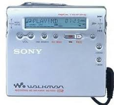
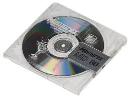

Sony Minidisc was created for audio recording and playback.
Sony Minidisc arrived on the market in 1992 by Sony with the purpose of flanking the walkman always produced by it. Production progressed from the launch until 2013.
Thought like the successor of the cassette, Sony Minidisc had mainly the possibility to listen to music for about 74 minutes thanks to the lossy ATRAC audio compression algorithm with a memory that allowed the archive of 145 MB. Finally, there was the possibility to record the user’s voice, always respecting limited memory.
The disc itself was contained in a 7 * 7 cm large plastic case which constitutes the memory of the device. All this had to be inserted in a special reader that allowed the reading of the discs. On it, there was the input for headphones with the buttons to raise and lower the volume, the button to change the song, the button to record the user’s voice, and others, obviously according to the model.
The initial price of the Sony Minidisc was 400$; with the passing of the years the produced units were reduced until the production finished; from that moment on the price has risen decidedly up to touch 1000$.
The Sony Minidisc was very popular in Japan, Canada, and also in the US. For the past 15 years, it was the best on the market until the mp3 player was launched in 2007.
In past years he was one of the greatest exponents as regards listening to music Recording the voice of the user with time, however, this role was taken primarily from the MP3 and then was replaced in turn by the mobile phone that has our days represents the most comfortable device to perform multiple actions.